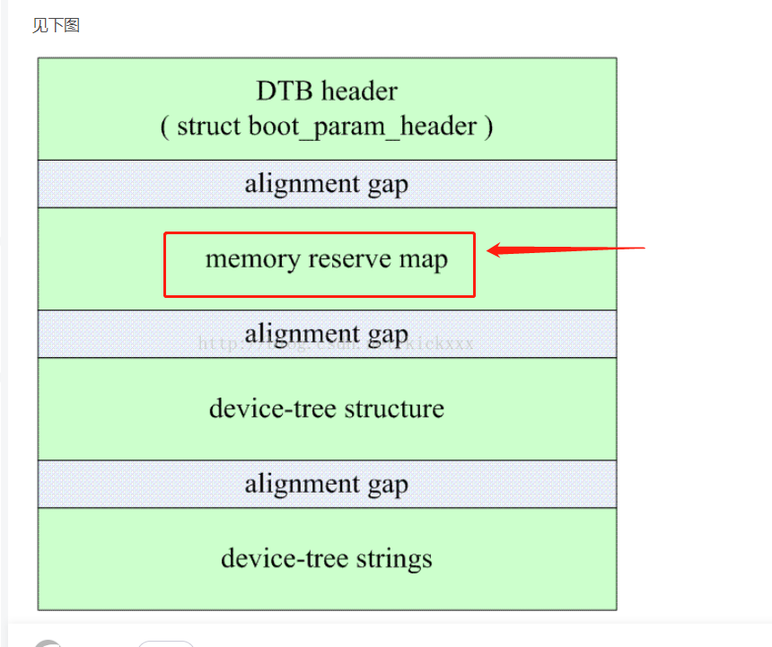
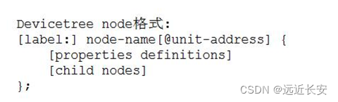
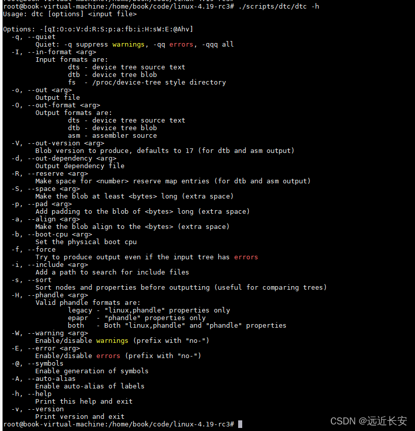

规范¶
dts文件格式¶
/dts-v1/; // 表示DTS文件的版本
/memreserve/ 0x40000000 0x01000000 // 保存的内存区域 格式为： /memreserve/ <address> <length>;
/ {
[property definitions]
[child nodes]
};
第一行 /dts-v1/; 表示的是DTS文件的版本。
第二行 [memory reservations],dtb的头中,指定了一个区域,表明了,内存保留地址,并且还有size

接下来是 / { … };，其中 / 是根，是设备树的起点。
对于每一个设备树，我们需要一些属性来描述这颗树，就是 [property definitions]；
同样，一颗树有很多树干，很多分支，一颗设备树同样也有很多子节点，子节点中又可以包含子节点，就是 [child nodes]。
属性¶
属性的格式有两种，一种是没有值的空属性，一种是有值的属性。
Property格式1:
[label:] property-name = value;
Property格式2(没有值):
[label:] property-name;
特殊属性,名字规定,例如 bootargs是用来设置启动指令
chosen {
bootargs = "rcupdate.rcu_expedited=1 rcu_nocbs=0-7 kpti=off";
};
属性值写法
用尖括号括起来 <xx xx xx …>，例如<1 0x3 0x123>，每个成员都是32bit数据，称为arrays of cells；
用双引号括起来的字符串 “…”，例如上面bootargs的字符串；
用中括号括起来的字节序列（byte string）[xx xx xx …]，使用16进制表示1个/多个byte，需要注意的是，byte string中，一个byte必须用2位16进制数来表示，例如[00 11 22]，其中00不能简写为0，但是byte之间的空格可以省略，也就是[00 11 22]和[001122]是一样的；
示例:
a. Arrays of cells : cell就是一个32位的数据
interrupts = <17 0xc>;
b. 64bit数据使用2个cell来表示:
clock-frequency = <0x00000001 0x00000000>;
c. A null-terminated string (有结束符的字符串):
compatible = "simple-bus";
d. A bytestring(字节序列) :
local-mac-address = [00 00 12 34 56 78]; // 每个byte使用2个16进制数来表示
local-mac-address = [000012345678]; // 每个byte使用2个16进制数来表示
e. 可以是各种值的组合, 用逗号隔开:
compatible = "ns16550", "ns8250";
example = <0xf00f0000 19>, "a strange property format";
设备节点¶

第一行的 label 可加可不加，node-name是节点名字；@unit-address是地址，可以用来区分内存节点，比如memory@30000000和memory@0，分别表示起始地址为0x3000 0000和0的两块内存；
以下例子只有node name
led {
compatible = "jz2440_led";
pin = <S3C2410_GPF(5)>;
};
以下例子有address
memory@30000000 { /* /memory/memory@30000000 */
device_type = "memory";
reg = <0x30000000 0x4000000>;
};
memory@0 { /* /memory/memory@0 */
device_type = "memory";
reg = <0 4096>;
};
默认属性名字¶
dts文件中有一些默认的属性名字，比如model，compatible，#address-cells，#size-cells，这些是根节点必须有的属性，它们代表的含义都是默认的，是事先约定好的。
/ {
model = "Qualcomm Technologies, Inc. SCUBA";
compatible = "qcom,scuba";
qcom,msm-id = <441 0x10000>;
interrupt-parent = <&wakegic>;
#address-cells = <2>;
#size-cells = <2>;
memory { device_type = "memory"; reg = <0 0 0 0>; };
mem-offline {
compatible = "qcom,mem-offline";
offline-sizes = <0x1 0x40000000 0x0 0x40000000>,
<0x1 0xc0000000 0x0 0x80000000>,
<0x2 0xc0000000 0x1 0x40000000>;
granule = <512>;
};
aliases {
sdhc1 = &sdhc_1; /* SDC1 eMMC slot */
sdhc2 = &sdhc_2; /* SDC2 SD Card slot */
swr0 = &swr0;
swr1 = &swr1;
};
cpus {
#address-cells = <2>;
#size-cells = <0>;
CPU0: cpu@0 {
device_type = "cpu";
compatible = "arm,armv8";
reg = <0x0 0x0>;
enable-method = "psci";
capacity-dmips-mhz = <1024>;
dynamic-power-coefficient = <100>;
next-level-cache = <&L2_0>;
qcom,freq-domain = <&cpufreq_hw 0 4>;
qcom,lmh-dcvs = <&lmh_dcvs0>;
#cooling-cells = <2>;
L2_0: l2-cache {
compatible = "arm,arch-cache";
cache-level = <2>;
};
L1_I_0: l1-icache {
compatible = "arm,arch-cache";
};
L1_D_0: l1-dcache {
compatible = "arm,arch-cache";
};
};
cpu-map {
cluster0 {
core0 {
cpu = <&CPU0>;
};
core1 {
cpu = <&CPU1>;
};
core2 {
cpu = <&CPU2>;
};
core3 {
cpu = <&CPU3>;
};
};
};
};
#address-cells ,在它的子属性中,使用多少个u32证书来描述地址
#size-cells,在它的子节点属性中,使用多少个u32证书来描述大小
reg = <address1 length1 address2 length2 address3 length3……>
memory { device_type = “memory”; reg = <0 0 0 0>; };
用来指定内存的地址,大小
cpu ,device_type = “cpu”; reg = <0x0 0x3>;
表明自己是哪一个cpu
引用属性¶
phandle, 节点中的phandle属性,它的取值必须是唯一,不要跟其他的phandle值一样,一般不用
pic@10000000{
phandle = <1>;
}
iic@20000000{
phandle = <2>;
}
another-device-node{
interrupt-parent = <1>; //使用phandle值为1来 引用上述几点,
}
使用label
PIC: pic@1000000{
interrupt-controller;
}
another-device-node{
interrupt-parent = <&PIC>; //使用label引用上述节点,使用label,实际也是用phandle来引用,
//编译dts文件为dtb文件时,编译器dtc会在dtb中插入phandle属性
}
override¶
设备树可以将一些公共部分写为dtsi文件,dts文件直接include dtsi
jz2440.dtsi
/dts-v1/;
/ {
model = "SMDK24440";
compatible = "samsung,smdk2440";
#address-cells = <1>;
#size-cells = <1>;
memory { /* /memory */
device_type = "memory";
reg = <0x30000000 0x4000000 0 4096>;
};
/*
cpus {
cpu {
compatible = "arm,arm926ej-s";
};
};
*/
chosen {
bootargs = "noinitrd root=/dev/mtdblock4 rw init=/linuxrc console=ttySAC0,115200";
};
LED: led {
compatible = "jz2440_led";
pin = <S3C2410_GPF(5)>;
};
};
后在dts文件中包含这个dtsi文件， 只要添加一个#include “jz2440.dtsi”即可。
/dts-v1/;
#include "jz2440.dtsi"
override
在dtsi文件中led节点的pin属性为<S3C2410_GPF(5)>，如果要修改为<S3C2410_GPF(6)>但是不想改变dtsi文件，那么只需要在dts文件中重新定义led节点的pin属性即可。
/dts-v1/;
/{ //led在根节点
led{ //重新定义led override
pin = <S3C2410_GPF(6)>;//用<S3C2410_GPF(6)> override <S3C2410_GPF(5)>;
}
};
方法二,可以直接引用label进行override
/dts-v1/;
#include "jz2440.dtsi"
&LED {
pin = <S3C2410_GPF(7)>;
};
编译¶
将dts和dtsi文件复制到arch\arm\boot\dts目录下，设置编译工具链。
export PATH=/home/book/code/gcc-linaro-4.9.4-2017.01-x86_64_arm-linux-gnueabi/bin/:$PATH
然后在根目录下执行make dtbs指令，编译dts文件，得到dtb文件。
反编译¶
可以使用dtc工具将dtb文件反编译成dts文件
./scripts/dtc/dtc -I dtb -O dts -o tmp.dts arch/arm/boot/dts/jz2440.dtb
dtc -h,输出dtc帮助命令

out目录生成dtb路径¶
UM.9.15/out/target/product/bengal/obj/kernel/msm-4.19/arch/arm64/boot/dts/vendor/qcom/a6650/.a6650-scuba-iot_V02_V03.dtb.dts.tmp